Released on February 28, 2007
(Next Release on March 7, 2007)
Here Comes The Sun
With the second major winter storm in the last several days now moving away off the East Coast, another storm, currently in the middle of the country, is expected to come through the eastern United States over the next few days. Unlike the earlier storms, by the time the current front hits the East Coast, temperatures should be high enough to make this a rain event for much of the region, as opposed to the snow and ice events caused by the last two storms. With February coming to a close, many people are looking forward to increasing amounts of sunlight and rising temperatures, and springtime seems not too far away. No wonder, then, that some people may be singing the famous Beatles’ 1969 hit “Here Comes the Sun” in their heads over the next few weeks. But, as winter nears its end and spring is around the corner, oil market analysts turn their attention away from heating oil and other heating fuels and towards gasoline. With springtime approaching, what is the current condition of the U.S. gasoline market?
One way to assess current conditions is to look at the inventory situation. If inventories are relatively plentiful, an immediate source of supply is available should market conditions tighten, thus lessening upward price pressure. However, if inventories are relatively scarce, prices would likely need to rise more than they would otherwise to attract more supply should market conditions tighten. At first glance, Figure 4 in the Weekly Petroleum Status Report (WPSR), it appears that gasoline inventories are more than comfortable when looking at the absolute level. However, as the chart below illustrates, when the level of demand is taken into consideration and the number of days of supply is compared to the last two years, gasoline inventories are actually lower this year, at this point in the calendar. Partly as a result of the inventory situation, the gasoline crack spread (the difference between the average spot price for gasoline and the spot price of West Texas Intermediate crude oil) will likely be a record for the month of February. This February, the spread will be about 19 cents per gallon higher than last February (28 cents per gallon this year vs. 9 cents per gallon last year). This reflects both weak refining margins last year (the 5-year average for February is about 15 cents), and record strength this year.
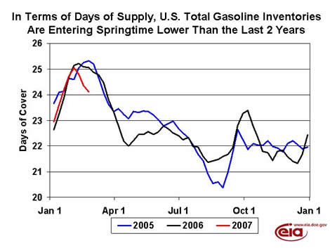
So, what does this portend for retail gasoline prices? Already, retail prices have increased by nearly 22 cents per gallon over the last four weeks. Absent any dramatic decline in crude oil prices, retail gasoline prices are likely to continue to increase over the next several weeks. The price outlook further into the future is more uncertain.
Residential Heating Oil Prices Increase Further
Residential heating oil prices continued their trend of increases with the period ending February 26, 2007. The average residential heating oil price gained 2.0 cents per gallon last week to reach 247.3 cents per gallon, an increase of 6.1 cents from this time last year. Wholesale heating oil prices gained 7.8 cents to reach 186.6 cents per gallon, an increase of 7.2 cents compared to the same period last year.
The average residential propane price increased by 0.4 cent, reaching 202.9 cents per gallon. This was an increase of 3.2 cents compared to the 199.7 cents per gallon average for this same time last year. Wholesale propane prices rose by 2.9 cents per gallon, from 105.4 to 108.3 cents per gallon. This was an increase of 9.6 cents from the February 27, 2006 price of 98.7 cents per gallon.
Gasoline and Diesel Prices Up Sharply
Gasoline prices rose sharply for the week of February 26, 2007, increasing 8.7 cents to 238.3 cents per gallon. Prices are now 12.9 cents per gallon higher than at this time last year. All regions reported price increases. East Coast prices were up 9.3 cents to 233.7 cents per gallon. Midwest prices rose 8.5 cents to 237.0 cents per gallon. The Gulf Coast had the largest regional price increase, with prices up 10.3 cents to 223.4 cents per gallon. Rocky Mountain prices increased 6.3 cents to 224.9 cents per gallon, while prices for the West Coast were up 6.8 cents to 266.4 cents per gallon. California prices jumped 8.6 cents to 279.6 cents per gallon, 35.7 cents per gallon above last year’s price.
Retail diesel prices were also up significantly, jumping 6.0 cents to 255.1 cents per gallon. The price is now 8.0 cents per gallon higher than at this time last year. All regions reported price increases. East Coast prices rose 4.7 cents to 252.6 cents per gallon. Midwest prices were up 7.9 cents to 252.3 cents per gallon, while the Gulf Coast also saw an increase of 7.9 cents, to 249.7 cents per gallon. Rocky Mountain prices were up 5.1 cents to 256.8 cents per gallon and prices on the West Coast saw an increase of 0.6 cent to 279.0 cents per gallon. California prices also increased, rising 1.0 cent to 291.1 cents per gallon. Prices are 22.3 cents per gallon higher than at this time last year.
Propane Stockdraw Slows
On the heels of some of the winter season’s biggest declines, the draw on propane inventories markedly slowed last week with a reported 2.8-million-barrel decline that lowered inventories to an estimated 31.9 million barrels as of February 23, 2007. Although winter storms continued to batter portions of the Midwest and East Coast last week, temperatures for the most part remained relatively moderate, mitigating the continuation of the strong stockdraws seen in these regions during the past several weeks. Midwest inventories reported the largest decline that measured 1.3 million barrels last week, while East Coast inventories continued lower with a weekly decline of 0.7 million barrels. Gulf Coast inventories during this same time reported a drop of 0.8 million barrels, while the combined Rocky Mountain/West Coast regions remained unchanged. Propylene non-fuel use inventories gained 0.1 million barrels last week to account for a 10.7-percent share of total propane/propylene inventories, compared with a 9.6-percent share reported the previous week.
Text from the previous editions of “This Week In Petroleum” is now accessible through a link at the top right-hand corner of this page.
| Retail Prices (Cents Per Gallon) | |||||||
| 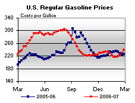 | 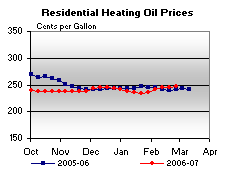 | ||||||
| 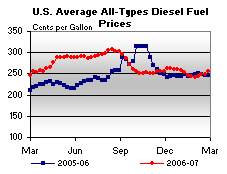 | 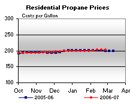 | ||||||
| Retail Data | Changes From | Retail Data | Changes From | ||||
| 02/26/07 | Week | Year | 02/26/07 | Week | Year | ||
| Gasoline | 238.3 | Heating Oil | 247.3 | ||||
| Diesel Fuel | 255.1 | Propane | 202.9 | ||||
| Spot Prices (Cents Per Gallon) | |||||||||||||||||||||||||||||||||||||||
| 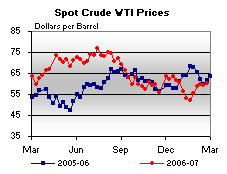 | 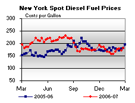 | ||||||||||||||||||||||||||||||||||||||
| 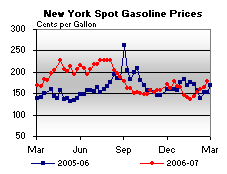 | 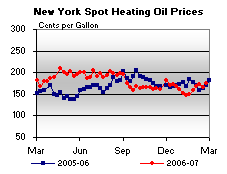 | ||||||||||||||||||||||||||||||||||||||
|
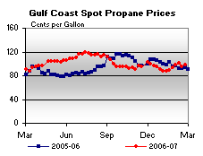 | ||||||||||||||||||||||||||||||||||||||
| Stocks (Million Barrels) | |||||||
| 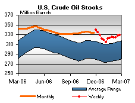 | 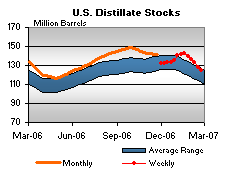 | ||||||
| 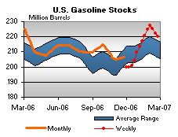 | 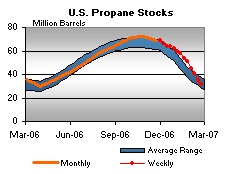 | ||||||
| Stocks Data | Changes From | Stocks Data | Changes From | ||||
| 02/23/07 | Week | Year | 02/23/07 | Week | Year | ||
| Crude Oil | 329.0 | Distillate | 124.5 | ||||
| Gasoline | 220.2 | Propane | 31.894 | ||||